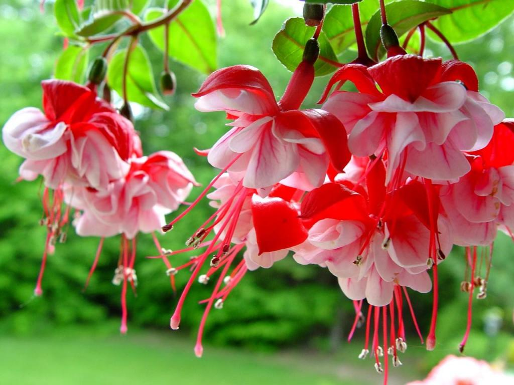
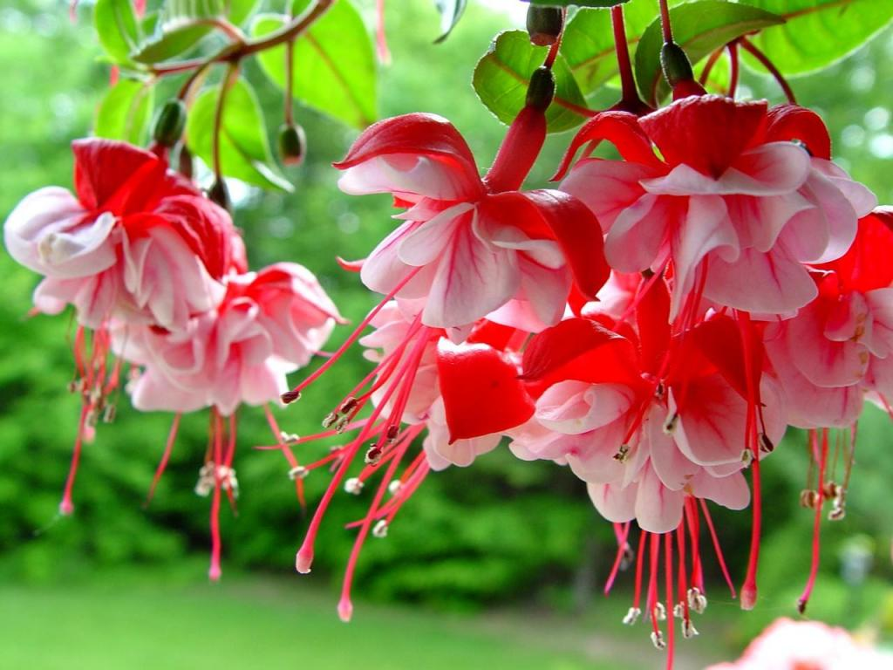

BS-Green Bengla school is the first and unique in a country where the level of education is provided in schools and madrassas. A total of 220 cases across the country in the high school and 280 primary schools and 84 colleges BS chairman Md. redoyan Riyad Or Riyan Khan said that he would establish. By BS assured that Bangladesh green their plans, but it was still poor and illiterate majority fell back. Each BS educate the poor and illiterate people in self-employment that will help them build and BS chairman of hope Look. Green Bengali village full of BS form; Business Green Village, which is Bengali, Bengali Society of green rural business community. BS BS Green Bengali bhilejake small. Basically, BS, which is a private Limited, the rural poor and simple people, the standard of living and self-reliance, short-term profit jatika the company's social and legal means in order to improve abehelita unemployed people.
 

BS Green Bengla School firm believer in the afterlife. So they thought that everything would turn the BS Green Bengla School, said company chairman Md. Redoyan Riyad Or Riyan Khan. Md. Redoyan Riyad Or Riyan Khan Said, the Muslims in our country is the creation of a difference of opinion between the two, 1. On the left side. 2. On the right side.
Green card is a debit card, which is a kind of 2.5 inches long and 3.5 inches in width with a green color, a kind of plastic card. Three leaves on the card with the logo BS Green Bangla Village.
BS Green Card just to be able to use internal staff or persons involved. BS Green Card may also those of external users; 1. BS-green Bangla Village members of more than one project. 2. BS-green Bangla Village's special adviser. 3. BS-green Bangla Village minimum of ten shares in the recipient. 4. BS-green Bangla Village members of the award. 5. A poor but talented student of BS-green Bangla Village. 6. Any person appointed Chairman of BS-green Bangla Village. 7. The affected members join BS. 8. Orphan or helpless people.